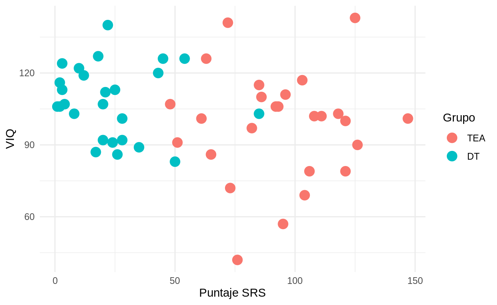
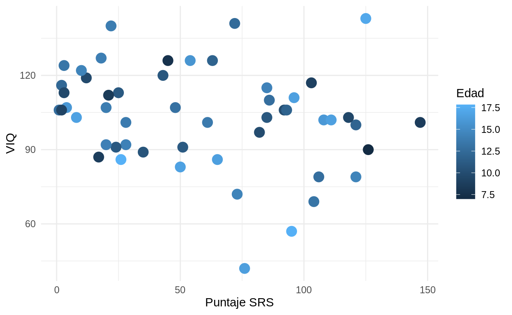
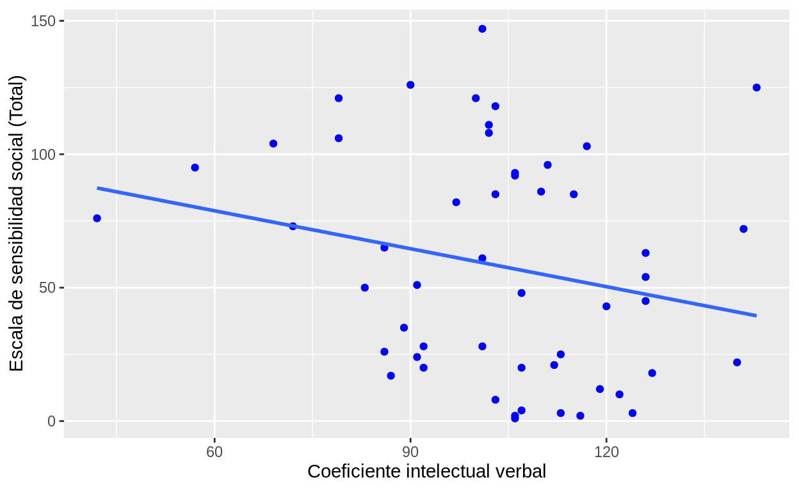
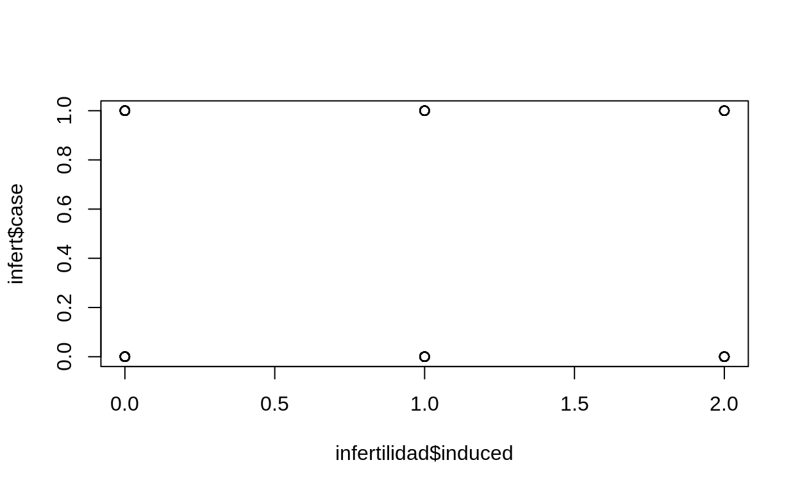
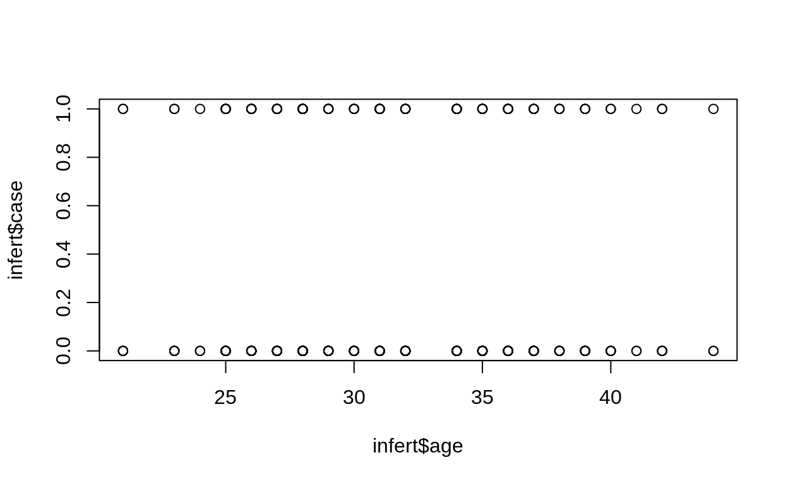

Correlación
Su finalidad es conocer la relación o grado de asociación que existe entre dos o más conceptos, categorías o variables en una muestra o contexto particular.
Las variables NO son variable independiente (causa) y dependiente(efecto) en la correlación.
¿Por qué? Porque una correlación fuerte entre dos variables no significa que una de ellas sea la causa de la otra.
Hipótesis en la correlación
Hipótesis estadísticas
H0: No existe una relación estadísticamente significativa entre las variables.
H1: Existe una relación estadísticamente significativa entre las variables.
Hipótesis de trabajo
Plantean que existe relación entre dos o más variables y puede ser que se especifique cómo están asociadas:
- Existe una relación entre el nivel socioeconómico y la calidad de vida.
- A mayor nivel socioeconómico, mayor calidad de vida.
- A mayor nivel socioeconómico, menor calidad de vida.
Se debe tomar en cuenta que en una hipótesis de correlación NO es importante en qué orden coloquemos las variables, ya que no hay relación de causalidad.
cuando X es mayor, Y es mayor = cuando Y es mayor, X es mayor cuando X es mayor, Y es menor = cuando Y es menor, X es mayor
Pruebas de hipótesis: Los coeficientes de correlación
Expresan cuantitativamente la magnitud y dirección de la relación entre dos variables.
* Magnitud: 0-1 * Dirección: Negativa-Positiva
- Correlación negativa perfecta: cada vez que X aumenta una unidad, Y disminuye siempre una cantidad constante
- Correlación positiva perfecta: cada vez que X aumenta una unidad, Y aumenta siempre una cantidad constante
Vamos a trabajar con los datos de ABIDE. Para esto primero vamos a leer el archivo csv y explorarlo.
BD_ABIDE<-read.csv("./datos/Phenotypic_V1_0b.csv")
names(BD_ABIDE)
[1] "SITE_ID"
[2] "SUB_ID"
[3] "DX_GROUP"
[4] "DSM_IV_TR"
[5] "AGE_AT_SCAN"
[6] "SEX"
[7] "HANDEDNESS_CATEGORY"
[8] "HANDEDNESS_SCORES"
[9] "FIQ"
[10] "VIQ"
[11] "PIQ"
[12] "FIQ_TEST_TYPE"
[13] "VIQ_TEST_TYPE"
[14] "PIQ_TEST_TYPE"
[15] "ADI_R_SOCIAL_TOTAL_A"
[16] "ADI_R_VERBAL_TOTAL_BV"
[17] "ADI_RRB_TOTAL_C"
[18] "ADI_R_ONSET_TOTAL_D"
[19] "ADI_R_RSRCH_RELIABLE"
[20] "ADOS_MODULE"
[21] "ADOS_TOTAL"
[22] "ADOS_COMM"
[23] "ADOS_SOCIAL"
[24] "ADOS_STEREO_BEHAV"
[25] "ADOS_RSRCH_RELIABLE"
[26] "ADOS_GOTHAM_SOCAFFECT"
[27] "ADOS_GOTHAM_RRB"
[28] "ADOS_GOTHAM_TOTAL"
[29] "ADOS_GOTHAM_SEVERITY"
[30] "SRS_VERSION"
[31] "SRS_RAW_TOTAL"
[32] "SRS_AWARENESS"
[33] "SRS_COGNITION"
[34] "SRS_COMMUNICATION"
[35] "SRS_MOTIVATION"
[36] "SRS_MANNERISMS"
[37] "SCQ_TOTAL"
[38] "AQ_TOTAL"
[39] "COMORBIDITY"
[40] "CURRENT_MED_STATUS"
[41] "MEDICATION_NAME"
[42] "OFF_STIMULANTS_AT_SCAN"
[43] "VINELAND_RECEPTIVE_V_SCALED"
[44] "VINELAND_EXPRESSIVE_V_SCALED"
[45] "VINELAND_WRITTEN_V_SCALED"
[46] "VINELAND_COMMUNICATION_STANDARD"
[47] "VINELAND_PERSONAL_V_SCALED"
[48] "VINELAND_DOMESTIC_V_SCALED"
[49] "VINELAND_COMMUNITY_V_SCALED"
[50] "VINELAND_DAILYLVNG_STANDARD"
[51] "VINELAND_INTERPERSONAL_V_SCALED"
[52] "VINELAND_PLAY_V_SCALED"
[53] "VINELAND_COPING_V_SCALED"
[54] "VINELAND_SOCIAL_STANDARD"
[55] "VINELAND_SUM_SCORES"
[56] "VINELAND_ABC_STANDARD"
[57] "VINELAND_INFORMANT"
[58] "WISC_IV_VCI"
[59] "WISC_IV_PRI"
[60] "WISC_IV_WMI"
[61] "WISC_IV_PSI"
[62] "WISC_IV_SIM_SCALED"
[63] "WISC_IV_VOCAB_SCALED"
[64] "WISC_IV_INFO_SCALED"
[65] "WISC_IV_BLK_DSN_SCALED"
[66] "WISC_IV_PIC_CON_SCALED"
[67] "WISC_IV_MATRIX_SCALED"
[68] "WISC_IV_DIGIT_SPAN_SCALED"
[69] "WISC_IV_LET_NUM_SCALED"
[70] "WISC_IV_CODING_SCALED"
[71] "WISC_IV_SYM_SCALED"
[72] "EYE_STATUS_AT_SCAN"
[73] "AGE_AT_MPRAGE"
[74] "BMI" str(BD)
'data.frame': 52 obs. of 5 variables:
$ SITE_ID : chr "YALE" "YALE" "YALE" "YALE" ...
$ DX_GROUP : int 2 2 2 2 2 2 2 2 2 2 ...
$ SRS_RAW_TOTAL: int 4 1 12 17 10 35 28 28 2 2 ...
$ VIQ : int 107 106 119 87 122 89 92 101 116 106 ...
$ AGE_AT_SCAN : num 15.92 12.75 9.75 8.67 14.42 ...Aquí, la variable DX_GROUP se toma como íntegro, pero realmente debería ser un factor de 2 niveles (1= Trastorno del Espectro Autista, 2= Desarrollo Típico):
Veamos los descriptivos de la muestra:BD %>%
group_by(DX_GROUP) %>%
summarise(
n=n(),
media_edad=mean(AGE_AT_SCAN),
ds_edad=sd(AGE_AT_SCAN),
min_edad=min(AGE_AT_SCAN),
max_edad=max(AGE_AT_SCAN),
media_SRS=mean(SRS_RAW_TOTAL),
ds_SRS=sd(SRS_RAW_TOTAL),
min_SRS=min(SRS_RAW_TOTAL),
max_SRS=max(SRS_RAW_TOTAL),
media_VIQ=mean(VIQ),
ds_VIQ=sd(VIQ),
min_VIQ=min(VIQ),
max_VIQ=max(VIQ),
)
# A tibble: 2 × 14
DX_GROUP n media_edad ds_edad min_edad max_edad media_SRS ds_SRS
<fct> <int> <dbl> <dbl> <dbl> <dbl> <dbl> <dbl>
1 TEA 26 13.0 2.94 7 17.8 93.4 25.3
2 DT 26 12.6 2.81 7.66 17.8 23.3 19.7
# … with 6 more variables: min_SRS <int>, max_SRS <int>,
# media_VIQ <dbl>, ds_VIQ <dbl>, min_VIQ <int>, max_VIQ <int>Visualización en Scatter plots (diagramas de dispersión)
Podemos darnos una idea de cómo es la relación entre dos variables usando los digramas de dispersión. En esta clase de visualización se grafica un punto en la coordenada donde interseccionan el valor de una variable X y el valor de una variable Y.
 Cuanto más cercanos son los puntos a una línea modelada, mayor es la magnitud del coeficiente de correlación.
Cuanto más cercanos son los puntos a una línea modelada, mayor es la magnitud del coeficiente de correlación.
library(ggplot2)
ggplot(BD, aes(x=SRS_RAW_TOTAL, y=VIQ, color=DX_GROUP)) +
geom_point(size=4) +
labs(
color ="Grupo",
x="Puntaje SRS",
y="VIQ"
)+
theme_minimal()

ggplot(BD, aes(x=SRS_RAW_TOTAL, y=VIQ, color=AGE_AT_SCAN)) +
geom_point(size=4) +
labs(
color ="Edad",
x="Puntaje SRS",
y="VIQ"
)+
theme_minimal()

Calculando los coeficientes
- Coeficiente de correlación de Pearson (r) o coeficiente producto-momento.
cor.test(BD$SRS_RAW_TOTAL,BD$VIQ)
Pearson's product-moment correlation
data: BD$SRS_RAW_TOTAL and BD$VIQ
t = -1.6335, df = 50, p-value = 0.1086
alternative hypothesis: true correlation is not equal to 0
95 percent confidence interval:
-0.46916880 0.05094158
sample estimates:
cor
-0.2250879 Aquí, el valor de cor indica la magnitud y la dirección de la correlación. El p-value nos indica si los resultados caen dentro de la zona de rechazo o la zona de aceptación de la hipótesis nula.

En general, en psicología suele asumirse un riesgo de 5% de concluir que existe un efecto cuando en realidad no lo hay (rechazar la hipótesis nula y quedarnos con la alternativa), por lo cual un p-value<0.05 implica que existe una relación estadísticamente significativa.
Una diferencia estadísticamente significativa solamente significa que existe evidencia estadística de que hay una relación. NO significa que la diferencia sea grande, importante o radicalmente diferente; para conocer la magnitud de la correlación recurrimos al coeficiente (cor).
- Coeficiente de correlación de Spearman (ρ), correlación de grados/rangos ordenados o Rho (ρ) de Spearman.
Es la alternativa no paramétrica de la correlación de Pearson, sin embargo es aplicable cuando las mediciones se realizan en una escala ordinal, aprovechando la clasificación por rangos.
cor.test(BD$SRS_RAW_TOTAL,BD$VIQ, method = "spearman")
Spearman's rank correlation rho
data: BD$SRS_RAW_TOTAL and BD$VIQ
S = 30227, p-value = 0.03681
alternative hypothesis: true rho is not equal to 0
sample estimates:
rho
-0.2903192 Matrices de correlación
Permiten identificar visualmente el valor de múltiples coeficientes de correlación y la dirección de las relaciones.
 * Aquí un tutorial para hacer matrices de correlación con la libreria corrplot. * Aquí un tutorial para hacer matrices de correlación con la libreria psych. * Aquí hay múltiples tutoriales útiles para graficar correlaciones.
* Aquí un tutorial para hacer matrices de correlación con la libreria corrplot. * Aquí un tutorial para hacer matrices de correlación con la libreria psych. * Aquí hay múltiples tutoriales útiles para graficar correlaciones.
Regresión lineal
Es un modelo estadístico que brinda la oportunidad de predecir las puntuaciones de una variable a partir de las puntuaciones de otra (estimar el efecto de una sobre otra)
Está asociado con el coeficiente de correlación de Pearson, pues a mayor magnitud del coeficiente se tiene mayor capacidad de predicción.
A diferencia de la correlación, sí se considera a una variable como dependiente y la otra independiente.
Trabaja con variables en nivel de medición de intervalos o razón.  # Recta de regresión
# Recta de regresión
La regresión lineal consiste en modelar la ecuación de una recta que pueda resumir el diagrama de dispersión. La ecuación modelada es:
Y’ = B0 + B1*x’
Donde:
- Y’ es un valor de la variable dependiente que se desea predecir
- B0 es el intercepto (valor que toma Y cuando X vale 0)
- B1 es la pendiente o inclinación de la recta. Para interpretar la pendiente se dice que: por cada unidad adicional en x, la variable Y aumenta B1 unidades.
- x’ es el valor nuevo que se asigna a la variable independiente o predictora.
B0 y B1 son coeficientes constantes que se obtienen al modelar la línea que mejor se ajusta a los datos. Tanto Y’ como x’ van cambiando, pues la nueva entrada da otro valor al realizar las operaciones de la ecuación.

Comandos en R
Con el comando lm(variable dependiente~predictor1, data = mis_datos) generemos un objeto donde se almacena la información del modelo.modelo_simple <- lm(SRS_RAW_TOTAL ~ VIQ, data = BD)
#modelo_multiple <- lm(SRS_RAW_TOTAL ~ VIQ+ AGE_AT_SCAN, data = BD)
modelo_simple
Call:
lm(formula = SRS_RAW_TOTAL ~ VIQ, data = BD)
Coefficients:
(Intercept) VIQ
107.2495 -0.4741 Intercepto: El valor promedio del puntaje de la SRS cuando el coeficiente intelectual verbal vale 0 es de 107.2495 unidades.
Pendiente (predictor disp): Por cada unidad que se incrementa en el predictor VIQ, el puntaje de la SRS disminuye en promedio 0.4741 unidades.
names(modelo_simple)
[1] "coefficients" "residuals" "effects" "rank"
[5] "fitted.values" "assign" "qr" "df.residual"
[9] "xlevels" "call" "terms" "model" summary(modelo_simple)
Call:
lm(formula = SRS_RAW_TOTAL ~ VIQ, data = BD)
Residuals:
Min 1Q Median 3Q Max
-55.997 -37.101 -4.937 32.953 87.633
Coefficients:
Estimate Std. Error t value Pr(>|t|)
(Intercept) 107.2495 30.4789 3.519 0.000934 ***
VIQ -0.4741 0.2902 -1.634 0.108640
---
Signif. codes: 0 '***' 0.001 '**' 0.01 '*' 0.05 '.' 0.1 ' ' 1
Residual standard error: 41.25 on 50 degrees of freedom
Multiple R-squared: 0.05066, Adjusted R-squared: 0.03168
F-statistic: 2.668 on 1 and 50 DF, p-value: 0.1086Se observa que el p-value del estadístico F es mayor a .05 (0.108640) , lo cual indica que el predictor del modelo no está significativamente relacionado con la variable dependiente.
Acorde a lo obtenido en multiple R-squared, el VIQ es capaz de explicar el 05.06% de la variabilidad observada en los puntajes totales de la SRS.
Gráfico de dispersión con la recta de regresión
#plot(BD$VIQ,BD$SRS_RAW_TOTAL)
#abline(modelo_simple, col = "red")
ggplot(data = BD, aes(x = VIQ, y = SRS_RAW_TOTAL)) +
geom_point(color='blue') +
geom_smooth(method = "lm", se = FALSE)+
labs(
x="Coeficiente intelectual verbal",
y="Escala de sensibilidad social (Total)"
)

Regresión logística
Al igual que la regresión lineal permite predecir la variable dependiente a partir de la independiente. Sin embargo, la variable dependiente (VD) NO es cuantitativa, es categórica.
Regresión logística binomial: La VD toma dos valores (0 y 1) dependiendo de si el individuo tiene una característica (1) o no (0).
Regresión logística multinomial: La VD tiene más de dos categorías.
Regresión logística binomial
Es un modelo de predicción de probabilidad de ocurrencia de una variable dicotómica categórica
Permite responder a la pregunta ¿qué tan probable es que ocurra una categoría determinada de la variable dependiente cuando se presenta cierto valor o cierta categoría en la(s) variable(s) independiente(s)?
Es decir, las variables independientes pueden ser tanto numéricas como categóricas.
Una de las principales aplicaciones de la regresión logística es la de clasificación binaria, en el que las observaciones se clasifican en un grupo u otro dependiendo del valor que tome la variable empleada como predictor. Por ejemplo, clasificar a una mujer como infertil o no en función de la edad, el número de abortos inducidos y espontáneos previos, información que se encuentra disponible en la base infert.
head(infert)
education age parity induced case spontaneous stratum
1 0-5yrs 26 6 1 1 2 1
2 0-5yrs 42 1 1 1 0 2
3 0-5yrs 39 6 2 1 0 3
4 0-5yrs 34 4 2 1 0 4
5 6-11yrs 35 3 1 1 1 5
6 6-11yrs 36 4 2 1 1 6
pooled.stratum
1 3
2 1
3 4
4 2
5 32
6 36#help(infert)
El diagrama de dispersión de dos variables categóricas no brinda mucha información, pues los datos de todas las participantes se agrupan en alguna de las 3 categorías de la variable induced y en alguno de las dos de la variable case.
infertilidad <- infert
plot(infertilidad$induced, infert$case)

NO hay linealidad en los datos
plot(infert$age, infert$case)

El diagrama de dispersión muestra dos líneas de datos agrupados de acuerdo con las categorías de la variable dependiente, por lo que no se cumple el supuesto de linealidad (los datos no se pueden representar con una línea recta). Esto es importante, ya que para cumplir este supuesto, internamente el modelo hace una transformación logarítmica de los datos.
modelo_logistica <- glm(
case ~ age + induced + spontaneous,
data = infertilidad, family = binomial)
summary(modelo_logistica)
Call:
glm(formula = case ~ age + induced + spontaneous, family = binomial,
data = infertilidad)
Deviance Residuals:
Min 1Q Median 3Q Max
-1.6678 -0.8201 -0.5984 0.9251 2.0236
Coefficients:
Estimate Std. Error z value Pr(>|z|)
(Intercept) -2.40494 0.96380 -2.495 0.0126 *
age 0.02154 0.02842 0.758 0.4484
induced 0.43429 0.20663 2.102 0.0356 *
spontaneous 1.21446 0.21331 5.693 1.25e-08 ***
---
Signif. codes: 0 '***' 0.001 '**' 0.01 '*' 0.05 '.' 0.1 ' ' 1
(Dispersion parameter for binomial family taken to be 1)
Null deviance: 316.17 on 247 degrees of freedom
Residual deviance: 279.04 on 244 degrees of freedom
AIC: 287.04
Number of Fisher Scoring iterations: 4Interpretación de los coeficientes del modelo
Los coeficientes miden el impacto en el logaritmo de la probabilidad. Para quitar el logaritmo se saca el exponencial de los coeficientes.
exp(coefficients(modelo_logistica))
(Intercept) age induced spontaneous
0.09027084 1.02177801 1.54387033 3.36845833 Se interpretan sólo los predictores que fueron significativos en el summary:
- Induced Por cada aborto inducido que se aumenta, la probabilidad de que la mujer sea infértil incrementa 1.54 unidades.
- Spontaneous Por cada aborto espontáneo que se aumenta, la probabilidad de que la mujer sea infértil incrementa 3.36 unidades.